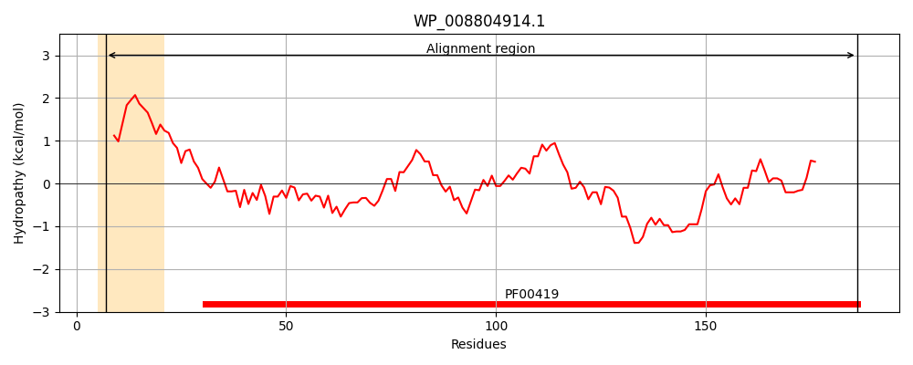
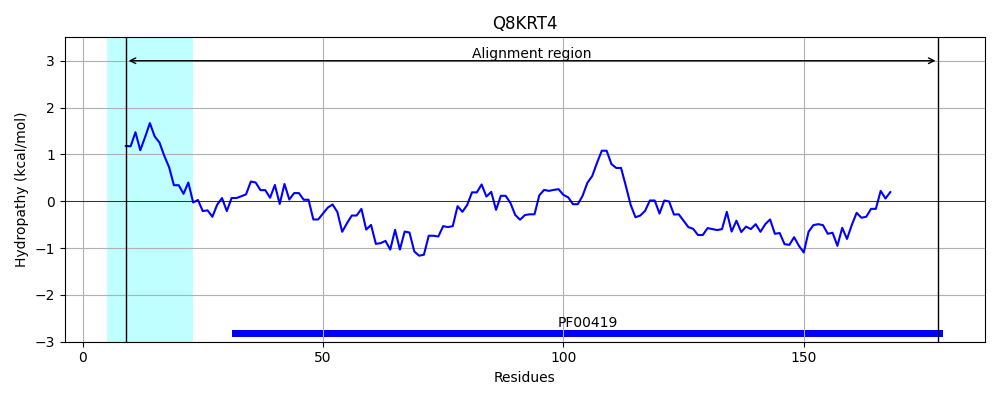
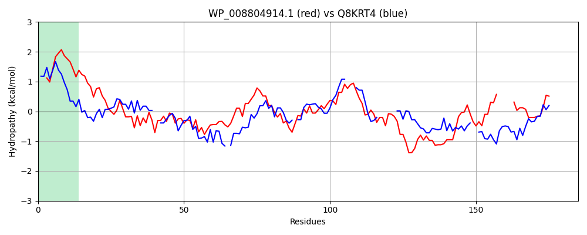

Hit Accession: Q8KRT4
Hit TCID: 1.C.80.1.1
Hit Description: gnl|BL_ORD_ID|16465 gnl|TC-DB|Q8KRT4|1.C.80.1.1 Fimbrial major subunit OS=Xenorhabdus nematophilus GN=mrxA PE=4 SV=1
Mach Len: 185
e:0.000000
Query TMS Count : 1
Hit TMS Count: 1
TMS-Overlap Score: 0.850000
Predicted Substrates:CHEBI:24870;ion, CHEBI:25367;molecule
BLAST Alignment:
Score: 114 , Bit scores: 48 bits, E-value: 1.8e-07, Alignment length: 185, Percentage identity: 28
Query: 7 LLVVGSLLAFSLATVIPARAAGTLNFTGKIINESCQIANNGGDVNVDFGNVDMSALKSHEAKTAETPFTINLTGCPLAQNISISLEGTPDTNANGTSAAVLALSDAADTAKGVGIEVFSSPDGSTEGTQLTFDKQSKTAVSQADENGDIAFNFIADLK-----SDSSLDVTAGNINATANIDIVY 186
+L G L A P + GT+ FTG IIN +C I NN ++ V+ G ++ LK E F I L C L + T A GT +LAL A+G I + + G + Q+ ++ D + D+ NF A LK + V G A AN + Y
Sbjct: 9 VLGFGVALTAGAANAAPTQGDGTVKFTGSIINAACSIKNN--NIEVNMGQINNVVLKDGGESKPE-HFKIELKDCVLDTLKGVKTMFT-GPEAEGTMPGLLALDGG---AQGAAIMI------TNHGNKHIPLGQASDMMTLHDGSKDL--NFSARLKGLKGTEGKDISVKTGEFTAIANFTLNY 178 | Protein Hydropathy Plots: |
|---|
|  |  |
Pairwise Alignment-Hydropathy Plot:
|
|---|
|  |